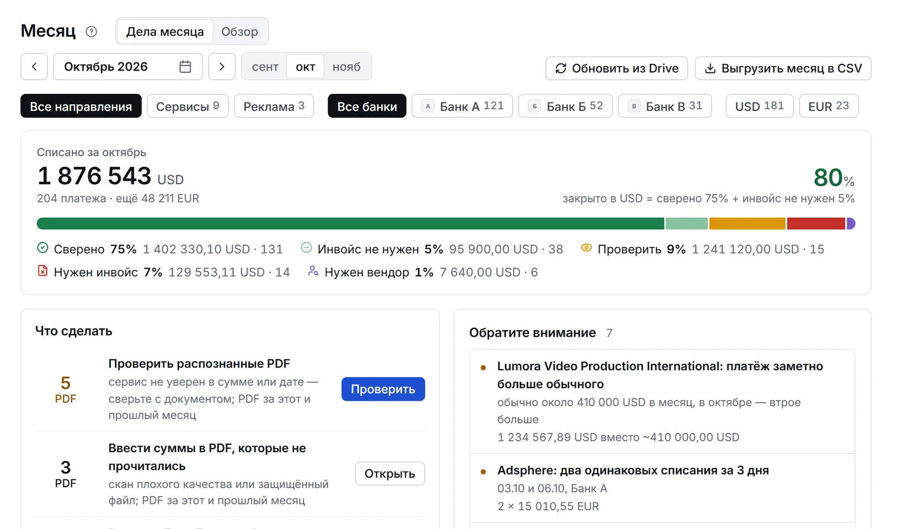

Где теряется время
Сначала смотрю в данные, потом говорю с людьми. История правок таблицы, время в форме, выгрузка чата и выписки банка дают четыре интервала ожидания по каждой заявке. Разговоры объясняют, почему они такие.
Вопросы и источники →Тестовое задание · согласование и оплата счетов
Сейчас статус заявки носят люди: спрашивают в чате и заглядывают в таблицу. Я предлагаю, чтобы статус приходил сам, а привычные форма и таблица продолжали работать. Ниже ход мыслей, живое демо под ваш кейс и кадры из системы, которую я уже построил.
Оплачено. Платёжка приложена из банка.
Если читать только один экран, то этот.
Время теряется не на согласовании и не на оплате. Оно теряется на неизвестности: никто не знает, где заявка и когда её оплатят, поэтому люди пишут в чат и проверяют таблицу.
Получается, что люди работают почтальонами между формой, таблицей, чатом и банком. Я бы оставил людям только решения и подпись, а доставку статуса отдал системе.
Сначала смотрю в данные, потом говорю с людьми. История правок таблицы, время в форме, выгрузка чата и выписки банка дают четыре интервала ожидания по каждой заявке. Разговоры объясняют, почему они такие.
Вопросы и источники →Первым: статус приходит сам, карточка с кнопками связана с таблицей в обе стороны. Потом: оплата закрывается по выписке. Позже: лимиты по договорам и умное окно вместо формы. Не трогаю два согласования, подпись человека и раздельные юрлица.
План и два варианта →Каждая смена статуса пишется со временем. Это бесплатный замер: время от заявки до оплаты, число вопросов «когда?» в чате, касаний на заявку. Базу снимаю до любых изменений.
Метрики →За первые две недели: цифру «как сейчас» и рабочий первый шаг, после которого вопрос «когда оплатят?» незачем задавать в чате.
Что уберу согласования или подключу банк напрямую. Это решается по цифрам первой недели и вместе с владельцем процесса.
Я работаю циклом: гипотеза, поиск готовых решений и контрпримеров, проверка вторым взглядом и только потом решение. Ниже пять ключевых установок, которые я дал ассистенту по ходу работы, и то, что из каждой выросло.
УстановкаНе ускоряй переписку. Найди, какой информации человеку не хватает в ту минуту, когда он пишет в чат, и предложи, как доставлять её без запроса.
Что из этого вырослоДиагноз: статус живёт в головах и в чате. Резкость первого вывода потом проверена вторым взглядом: каркас у процесса правильный, не хватает одного слоя. Диагноз →
УстановкаДля таблицы и для чата ответь отдельно: какую работу они выполняют сейчас и что будет, если убрать их совсем. Оставь только то, что нечем заменить.
Что из этого вырослоТаблица остаётся как привычный журнал, но «да» ставится кнопкой. Чат остаётся людям, но не для статусов. План →
УстановкаНовое строится поверх старого. Старый способ продолжает работать, данные идут в обе стороны, в первый день никто не меняет привычки.
Что из этого вырослоСогласовал в таблице, карточка обновилась. Нажал кнопку, строка обновилась. Откат занимает минуту. Демо →
УстановкаДай быстрый вариант на low-code и надёжный на коде. Для каждого назови срок, цену ошибки и момент, когда он перестаёт справляться.
Что из этого вырослоLow-code беру для разведки и простых связок, деньги и согласования веду кодом. Выбор сделан по четырём признакам, а не по привычке. Два варианта →
УстановкаСчитай суммы и получателей закрытыми. Для каждого экрана и сообщения определи, кто их видит. Разработка и показы идут только на выдуманных данных.
Что из этого вырослоПлатёжки уходят из общего чата. Суммы видит роль, а не все подряд. Реальных сумм не вижу даже я как разработчик. Данные →
Вводных мало, поэтому фиксирую, из чего исхожу. Каждое допущение проверяется в первый день. Рядом написано, что изменится, если я ошибся.
В процессе нет места, куда можно посмотреть и увидеть правду про заявку. Поэтому правду добывают: вопросом в чат или походом в таблицу. Каждый вопрос отвлекает двоих.
Каркас у процесса правильный. Не хватает слоя, который сам сообщает людям, что происходит.
Это гипотезы: процесс я видел только в описании. Каждую проверяю в первую неделю, прежде чем что-то менять.
Порядок важен. Сначала данные: они не устают и не приукрашивают. Потом люди: они объясняют, почему цифры такие.
Когда заявка реально подана. Это точка отсчёта.
Кто и когда ставил согласование и отметку об оплате. По ячейкам она смотрится вручную, поэтому беру выборку из 30 заявок.
Сколько сообщений на заявку, кто кого спрашивает, когда пришла платёжка.
Настоящее время списания. Сравниваю с временем согласования.
Сколько заявок, доля постоянных подрядчиков, возвраты на доработку.
Рядом два счётчика шума: сколько сообщений в чате приходится на одну заявку и сколько раз в день люди открывают таблицу, чтобы «просто проверить». Самый длинный интервал и есть место, куда бить первым. Чтобы дальше не считать руками, с первого дня включаю запись времени каждой правки в таблице: через две недели есть точная база по всем заявкам, а не по выборке.
Вопрос, который задам каждому: «Вспомните заявку, которая шла дольше всего. Что с ней происходило по дням?» Один разобранный случай показывает больше, чем час общих слов. И одного вопроса я не задаю вообще: «что вам автоматизировать?» На него люди описывают ускоренную версию того, что уже есть.
Иду ступенями. Каждая ступень приносит пользу сама по себе и не требует следующей. Если цифры покажут, что дальше идти незачем, останавливаемся.
Разбираю выборку заявок по истории таблицы и чату, говорю с участниками, считаю четыре интервала и шум. Включаю запись времени правок.
Бот с карточкой заявки и кнопками. У каждого шага есть срок и ответственный, на время отпуска назначается замена. Двусторонняя связь с таблицей и напоминания.
Система сопоставляет выписку с заявками и сама прикладывает платёжку. Окна оплаты, например 11:00 и 16:00: автор видит, когда ждать деньги.
Лимиты по договорам: в лимите без повторного «да», менеджерам только исключения. Умное окно вместо формы. Черновики платёжек в банке. Свой кабинет с дашбордом.
Как место, где ставят «да», не нужна: кнопка быстрее и оставляет след, кто и когда. Как привычный журнал и источник отчётов нужна, поэтому она остаётся и заполняется сама. Жить ли ей дальше, можно будет решить, когда к новому привыкнут.
Для разговора по существу да: спорный подрядчик, непонятная сумма. Для статусов и платёжек нет. Это не разговор, а доставка информации, и её должна делать система. Вопрос по заявке задаётся в её карточке и остаётся в её истории.
| Быстрыйlow-code на том, что у вас уже есть | Надёжныйнебольшой свой сервис на коде | |
|---|---|---|
| Из чего | Google-форма и таблица как есть, бот в мессенджере и связка на low-code: Apps Script или n8n. | База заявок, журнал событий, бот, роли. Таблица синхронизируется с базой в обе стороны. |
| До пользы | Дни. | Три–пять недель до работающего ядра. |
| Где правда | В таблице. Её может случайно поправить кто угодно. | В журнале сервиса. Таблица становится зеркалом. |
| Сильное | Ничего не ломает, почти бесплатно, быстро проверяет саму идею на живых людях. | Права и обезличивание, история «кто и когда», автотесты, сверка с банком, растёт в общую систему. |
| Слабое | Логика расползается по скриптам, тестировать трудно, права грубые, сверку с банком не вытянет. | Дольше. Нужны сервер и человек, который это поддерживает. |
| Когда | Первым шагом: снять боль за неделю и получить цифры. | Когда заявок много, появляются лимиты, сверка и второй процесс рядом. |
Low-code и no-code (n8n, Make, Apps Script) я знаю изнутри: начинал с них и до сих пор беру, когда нужно за день проверить идею или связать два сервиса. Выбор делаю по четырём признакам.
В этой задаче первые две ступени по этим признакам проходят как low-code, а сверка с банком и лимиты как код. Быстрый шаг при этом не выбрасывается: бот и вид карточки остаются, меняется только то, что под ними.
Это и есть бесшовная интеграция: на каждом уровне старый способ работает параллельно с новым, и между ними двусторонняя связь. Переход идёт без «с понедельника все работаем по-новому».
Карточка с кнопками, статус обновляется в том же сообщении. Запускается за дни.
для первой ступениПолноценный экран внутри мессенджера: очередь заявок, умная форма, документы. Человека узнаёт по учётной записи Telegram, отдельный пароль не нужен.
для своего кабинетаТе же кнопки и окна плюс вкладка с очередью. Подходит, если рабочая переписка уже идёт там.
если команда уже тамВ Индонезии чаще пользуются WhatsApp: кнопки там есть, но деловые сообщения идут по согласованным шаблонам и могут быть платными. Почта есть у всех: письмо со ссылками «согласовать» и «вопрос».
запасной каналУ российской и индонезийской команды каналы могут быть разными. Для ядра это одна и та же заявка: менеджер в Telegram и плательщик в WhatsApp видят один статус.
Каждая смена статуса записывается со временем. Значит, замер получается бесплатно и без опросов. Главное условие одно: цифру «до» снимаю раньше, чем что-то меняю. Без неё цифра «после» ничего не доказывает.
Медиана и худшие 10% заявок, отдельно по каждому из четырёх интервалов и по каждому юрлицу. Медиана показывает обычный день, худшие 10% показывают, где болит.
Цельназначаем после замера, а не заранее
Считаю по выгрузке чата до изменений и после каждого шага: сколько сообщений про статус и платёжки приходится на одну заявку.
Цельноль
Сколько раз люди что-то открывали, вбивали или пересылали ради одной заявки.
Цельрешение и подпись
Доля заявок, где подтверждение пришло из банка без участия человека.
Цельрастёт от шага к шагу
Сколько заявок стоит на одном шаге дольше оговорённого срока и на каком именно.
Цельвидны в тот же день

В системе, которую я построил, такой экран уже есть. Каждый месяц он показывает, какую долю работы закрыла система, какую человек и сколько осталось, а рядом историю за полгода. Ниже система сама предлагает, что передать ей следующим.
Для вашего кейса на таком экране будут время от заявки до оплаты, вопросы про статус в чате и доля оплат, закрытых по выписке.
Вы просили приложить промпты, если использовался ИИ. Использовался, и я считаю это рабочим инструментом, а не секретом. Показываю, что делал ассистент, что делал я и какими промптами это управлялось.
Ассистент искал готовые решения и API банков, проверял мои идеи на реальность и собирал страницу и демо по моим постановкам. Выбор решения, границы контроля и приоритеты мои. Система из примеров тоже моя работа.
Вместо одного длинного промпта я подключаю готовые наборы правил под каждую часть работы: оформление страницы, схемы, дизайн-система, движение.
Ни одного ручного скриншота. Автотест открыл систему на стенде с подменёнными данными, заменил названия, прошёл сценарии и записал экран. Дальше монтаж и сжатие.
Роль. Ты помогаешь мне разобрать рабочий процесс и подготовить ответ на тестовое задание. Решения принимаю я, ты ищешь, проверяешь и собираешь.
Цель. Ответить на три вопроса задания так, чтобы был виден ход мыслей: где теряется время, что менять и в каком порядке, как измерить результат.
Контекст. Текст задания. Система, которую я построил, как пример похожей задачи. Всё, чего нет во вводных, считай допущением и выписывай отдельно.
Сначала. До любой работы перечисли допущения, назови развилки, предложи план и дождись моего «да».
Формат. Одна страница: короткий ответ, затем подробности, два варианта решения с обоснованием, схемы, живой пример под их процесс.
Нельзя. Ломать то, что у них работает. Придумывать цифры. Показывать реальные суммы и названия.
Готово, когда. Три вопроса закрыты. Макет собран под их процесс, а не под мой. Утверждения о банках и инструментах подтверждены ссылками. Обещано меньше, чем показано.
Схема «цель, формат, предупреждения, контекст» принадлежит Бену Хайлаку, её пересылал президент OpenAI Грег Брокман. Блок «Готово, когда» следует правилу Карпатого задавать критерии, а не шаги. Блок «Сначала» следует совету Anthropic начинать с плана.
Не додумывай. Если во вводных чего-то нет, запиши допущение и покажи развилку. Не выбирай за меня молча.Don't assume. Don't hide confusion. Surface tradeoffs.
Сначала простое. Первый шаг собирается на том, что уже есть. Ничего «на вырост».Minimum code that solves the problem. Nothing speculative.
Не трогай лишнее. Меняй только то, без чего цель не достигается. То, что работает, остаётся как есть.Touch only what you must. Clean up only your own mess.
Критерий и проверка. У каждого шага есть признак «готово». Работа идёт, пока проверка по нему не пройдена.Define success criteria. Loop until verified.
Под каждым правилом оригинальная формулировка из открытого набора, собранного по заметкам Карпатого.
Критерии. Пройди по пунктам «Готово, когда» из постановки и отметь, какие не выполнены.
Слабые места. Из всего, что мы обсудили по этой задаче: что в моём решении я сам не вижу? Назови слабые места, начиная с самого опасного, и к каждому предложи правку.From all of our interactions what is one thing that you can tell me about myself that I may not know about myself?
Второй взгляд. Я мог быть субъективен. Оцени их процесс независимо от моей версии: что в нём сделано правильно и что ещё может быть не так, кроме того, что заметил я.
Проверка фактов. Перечисли утверждения, которые не подтверждены источником, и пометь их прямо в тексте.
Под вопросом про слабые места стоит оригинал: вопрос Тома Моргана, который Сэм Альтман переслал со словами «love this». Что нашлось, вошло в блоки «Второй взгляд» раздела 04 и «Риски» раздела 06.
Ответ на три вопроса выше. Ниже то, что я сделал сверх них: живое демо под ваш кейс, как решение ложится в одну систему, работа с чувствительными данными, кадры системы, которую я уже строил, план первых пяти дней и ссылки.
Это концепт под ваш кейс, он работает прямо на странице. Сыграйте за участников сами или включите автопоказ, а потом переключите вариант и сравните. Следите за тем, чего на экране нет: общего чата с вопросами.
Общее у обоих вариантов: статус приходит сам, решают люди. Разное: сколько остаётся ручной работы и кто подтверждает оплату. Переключите вариант, и строка покажет разницу.
Сейчас ход: Сотрудник №1. Нажмите кнопку в окне мессенджера.
Кому: Сотрудник №1
Согласовать можно и здесь, как раньше. Бот увидит правку и обновит карточку: связь двусторонняя.
Банк не подключён. О том, что платёж прошёл, система узнаёт от человека: он нажимает кнопку и прикладывает файл.
Результат для команды у обоих вариантов один: вопросов в чате нет, таблица остаётся рабочей. Отличается ручная работа. Быстрый вариант показан таким, каким он будет на второй неделе: заявку и платёж вбивают руками, оплату подтверждает человек. Надёжный показан целиком, со всеми ступенями из вопроса 2: счёт читается сам, платёжку готовит система, оплату подтверждает выписка банка. Суммы, названия и время выдуманы.
Оплата счетов не последний процесс, который захочется упростить. Если каждый автоматизировать отдельно, через год будет пять ботов, семь таблиц и ни одной общей картины. Поэтому общее ядро появляется вместе с надёжным вариантом, и оплата счетов становится его первым модулем. Быстрый шаг на вашем стеке живёт до этого момента, а потом его бот и карточка переезжают на ядро.
Заявки на оплату это суммы, получатели и условия договоров. Сейчас платёжки лежат в общем чате, и их видит каждый участник. Автоматизация должна делать с этим порядок строже, а не свободнее. Я внедряю так, что сам не вижу реальных сумм: для замера мне хватает дат и статусов, а разработка идёт на выдуманных данных.
Финансы видят точные суммы и получателей. Остальные, включая меня как разработчика, видят псевдоним и закрытую сумму.
Стенд, тесты и демо работают на придуманных подрядчиках. Реальные строки в базе закрыты от разработчика на уровне самой базы.
Документ об оплате видят участники заявки, а не все, кто когда-либо был добавлен в чат. В карточке бота только то, что нужно для решения. Реквизиты и сам документ открываются после входа.
Кто согласовал, кто оплатил, кто исправил. На вопрос аудитора отвечает журнал, а не раскопки в переписке.
| Получатель | Назначение | Сумма |
|---|---|---|
| ООО «Вектор» | Реклама, счёт № 118 | 184 500 ₽ |
| PT Nusa Kreatif | Продакшн, INV-2211 | Rp 48 500 000 |
| ИП Соколов А. | Дизайн, акт № 7 | 62 300 ₽ |
Наблюдатель по-прежнему видит, сколько заявок в работе, где они стоят и сколько ждут. Этого достаточно, чтобы чинить процесс, и недостаточно, чтобы узнать чужие условия.


роль «Финансы»без ролиПохожую задачу я уже решал в продуктовой IT-компании: бухгалтерия, платежи нескольких банков, документы подрядчиков и выплаты сотрудникам. Ниже кадры системы, которую я для этого построил, на демо-стенде. Данные выдуманы, названия банков и компании заменены.
Раньше сотрудники подавали выплаты формой и письмом, а бухгалтер пересчитывал. Теперь окно само считает оклад по рабочим дням, компенсации по чекам с курсом нацбанка и лимитами и не даёт отправить без документа.
Для вашего кейса это шаг после надёжного варианта: окно вместо Google-формы, счёт читается сам, сумма и юрлицо проверяются до отправки.
Бухгалтер не ищет, какой документ к какому платежу. Система сама сводит пары, объясняет, почему они сошлись, и замечает повторяющиеся решения: одобрите один раз, и такие платежи будут закрываться сами.
Для вашего кейса так закрывается оплата: система находит списание в выписке и показывает, почему считает его оплатой этой заявки.

Чек фотографируют в спортзале, счёт согласуют между встречами. Если для действия нужно сесть за компьютер и открыть таблицу, действие откладывают. Поэтому каждое окно сначала проверяется на узком экране.
Что здесь что. Живое демо в разделе 09 это концепт под ваш кейс, я собрал его для этого ответа. Кадры и видео в этом разделе и экран в разделе 11 сняты с системы, которую я построил, на стенде с выдуманными данными. Названия компании, банков и внутренних сервисов заменены при съёмке.
Если начинать завтра, неделя выглядела бы так.
Чтение таблицы, выгрузка чата, знакомство с владельцем процесса. Проверяю допущения.
Собираю четыре интервала и шум по истории за последние месяцы.
Разговоры по 20–30 минут и разбор самых долгих заявок.
Показываю цифры и одно предложение: какой шаг первый и почему.
Карточка с кнопками на выдуманных заявках: показываю, как будет выглядеть первый шаг, и договариваемся о старте.
Автоматизация здесь не цель. Цель в том, чтобы человек, подавший заявку, больше никогда не спрашивал, что с ней.
Возможности банковских API зависят от тарифа и типа счёта, поэтому каждую проверяю при подключении.